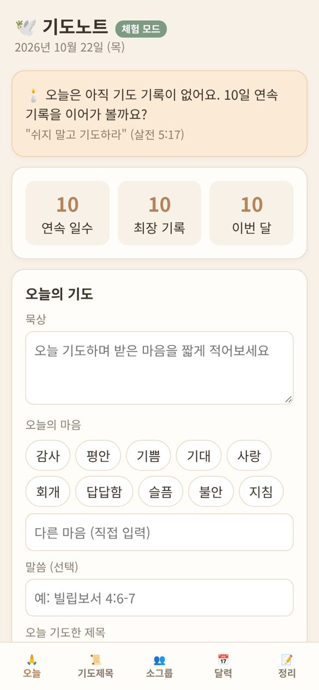
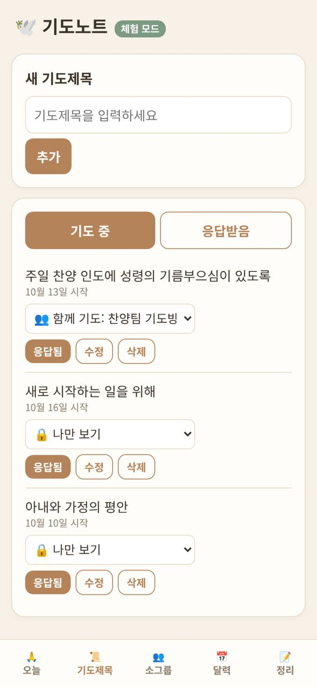
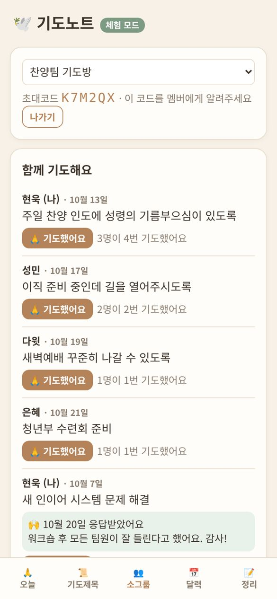
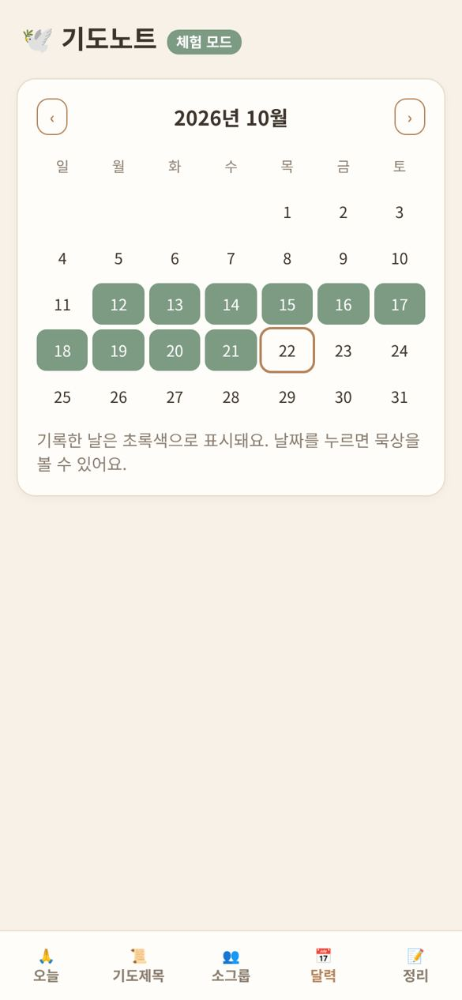
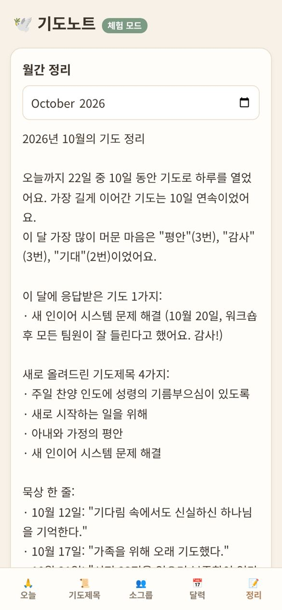

기도노트 사용 설명서
처음 쓰시는 분도 5분이면 충분해요
🕊️ 기도노트란?
매일의 기도를 짧게 기록하고, 기도제목과 응답을 모아 두는 앱이에요. 소그룹 식구들과 기도제목을 나누고 서로를 위해 기도할 수도 있어요.
아래쪽 메뉴는 다섯 개예요.
📲 홈 화면에 설치하기
앱스토어에서 받지 않아도 돼요. 홈 화면에 추가하면 앱처럼 아이콘을 눌러 바로 열 수 있어요.
아이폰 (사파리)
- 사파리에서 gidonote.com을 열어요.
- 아래쪽 공유 버튼(□↑)을 눌러요.
- 홈 화면에 추가를 누르고, 오른쪽 위 추가를 눌러요.
안드로이드 (크롬)
- 크롬에서 gidonote.com을 열어요.
- 화면 오른쪽 아래 📲 앱 설치 버튼을 눌러요.
- 버튼이 안 보이면 오른쪽 위 ⋮ 메뉴에서 앱 설치 또는 홈 화면에 추가를 눌러요.
🔑 회원가입과 로그인
- 처음이시면 처음이에요 (회원가입)을 눌러요.
- 이름을 적어요. 소그룹 식구들에게 보이는 이름이에요.
- 이메일과 비밀번호(6자 이상)를 적고 버튼을 누르면 끝이에요.
- 다음부터는 같은 이메일과 비밀번호로 로그인하시면 돼요.
🙏 매일 쓰기 (오늘 탭)

오늘 탭 화면 (예시)
- 묵상 칸에 오늘 기도하며 받은 마음을 한두 줄 적어요. 한 줄이면 충분해요.
- 오늘의 마음에서 감사, 평안, 기쁨 같은 마음을 골라요. 여러 개 골라도 되고, 직접 적을 수도 있어요.
- 말씀 (선택)에 오늘 붙잡은 말씀을 적어요. 예: 빌립보서 4:6-7
- 오늘 기도한 제목에서 오늘 기도한 기도제목을 눌러 표시해요.
- 저장하기를 누르면 끝! "저장됨 ✓"이 보이면 저장된 거예요.
📜 기도제목과 응답

기도제목 탭 화면 (예시)
- 새 기도제목 칸에 적고 추가를 눌러요.
- 기도가 응답되면 그 제목의 응답됨을 눌러요. 응답받은 날짜와 짧은 감사 메모를 남길 수 있어요.
- 응답된 제목은 응답받음 칸으로 옮겨져서 언제든 다시 볼 수 있어요.
- 수정, 삭제로 고치거나 지울 수 있고, 실수로 눌렀다면 응답 취소를 누르세요.
소그룹과 나누기
기도제목마다 아래에 고르는 칸이 있어요. 처음엔 🔒 나만 보기예요. 👥 함께 기도: (소그룹 이름)으로 바꾸면 그 소그룹 식구들도 함께 기도할 수 있어요.
👥 소그룹

소그룹 탭 화면 (예시)
소그룹 만들기 (리더)
- 소그룹 탭 아래 소그룹 만들기 / 참여에 이름을 적고 만들기를 눌러요.
- 초대코드가 나와요. 이 코드를 카톡으로 식구들에게 보내 주세요.
소그룹 참여하기 (멤버)
- 받은 코드를 초대코드로 참여 칸에 적어요.
- 참여하기를 누르면 끝이에요.
함께 기도하기
함께 기도해요에 식구들이 나눈 기도제목이 보여요. 기도한 뒤 🙏 기도했어요를 눌러 주세요. 몇 명이 기도했는지 함께 보여서 큰 힘이 돼요. 응답받은 소식과 감사 메모도 여기서 같이 나눠요.
📅 달력 · 연속 기록 · 월간 정리
연속 기록: 오늘 탭 위쪽에 연속 일수, 최장 기록, 이번 달 기도한 날 수가 보여요. 하루 한 줄씩 이어가 보세요.

달력 탭 화면 (예시)
달력: 기록한 날은 초록색으로 표시돼요. 날짜를 누르면 그날의 묵상을 다시 볼 수 있어요.

정리 탭 화면 (예시)
월간 정리: 한 달 동안 며칠 기도했는지, 많이 머문 마음, 응답받은 기도, 새 기도제목을 한눈에 정리해 줘요. 복사하기를 누르면 카톡에 붙여 넣어 나눌 수도 있어요.
🙋 자주 묻는 질문
돈이 드나요?
아니요, 무료예요.
다른 사람이 제 기도를 볼 수 있나요?
아니요. 개인 기록은 나만 봐요. 소그룹에는 내가 "함께 기도"로 고른 기도제목과 그 응답 메모만 보여요.
비밀번호를 잊어버렸어요.
아직 앱 안에 비밀번호 찾기 기능은 없어요. 소그룹 리더나 기도노트 담당자에게 연락해 주세요.
이름을 바꾸고 싶어요.
정리 탭 아래 내 계정에서 이름 변경을 누르세요. 여기서 로그아웃도 할 수 있어요.
휴대폰을 바꾸면 기록이 없어지나요?
아니요. 새 휴대폰에서 같은 이메일로 로그인하면 그대로 있어요.
카톡에서 열었는데 사파리로 넘어가요.
정상이에요. 홈 화면 설치는 사파리·크롬에서만 되어서 자동으로 넘겨 드려요.